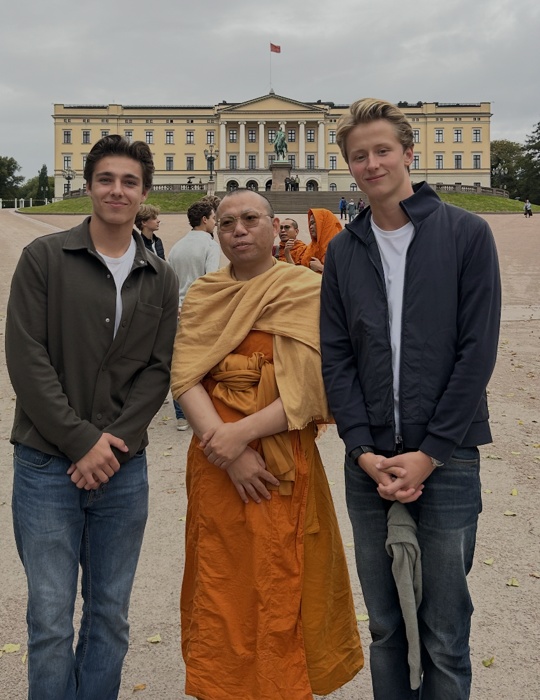

På fritiden liker jeg å være aktiv, være med venner og gamer iblant med kompiser. Jeg liker også å være med familien min, som består av Mamma, Pappa, Lillesøster og hunden min Teddy. Han er en jakt cocker spaniel.

Dette er meg, en kompis og en munk vi fant!
Jeg liker å spille tennis, og har gjort det helt siden barnehagen. Jeg sluttet dette året på grunn av skader dessverre.
Jeg liker egentlig ikke styrketrening, men sliter meg til evo tre ganger i uken. Jeg liker derimot å løpe, og gjør dette ofte med en kompis.
Jeg bruker en god del tid med kompiser, og digger å være med venner. Vi gjør alt fra ingenting, til å at vi en gang bygde en trehytte over en sommer.